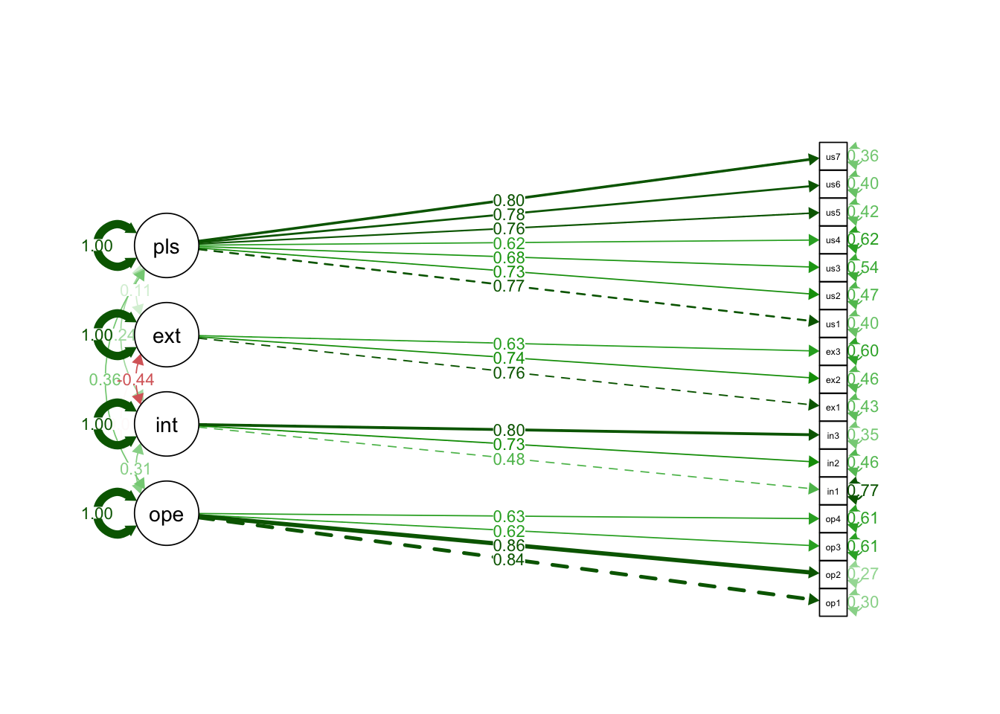

library(haven)
library(knitr)
library(lattice)
library(tidyverse)
library(here)
library(flextable)
library(devtools)
library(lavaan)
library(ggplot2)
library(plm)
library(naniar)
library(purrr)
library(psych)
library(interactions)
library(semPlot)Paper_MEPOP_1
The Impact of Political Campaigns on Affection: The Case of the First Chilean Constitutional Process (2022)
Authors: Pedro Fierro, Claudia Ramírez, Andrés Sherman, Sebastián Rivera y Magdalena Saldaña
† Este documento es para compartir ideas y tener acceso al código que estamos ocupando.
Environment
Preparing our environment (loading libraries).
Cross-Sectional Approach
Importing data and creating variables
#Import Data
data_w1 <- read_sav("Data_W1.sav")
# ID
data_w1$id <- data_w1$CodPanelista
# Age
data_w1$age_num <- data_w1$age
# Socioeconomic Status
data_w1$ses <- data_w1$RECO_NSE
# Education
data_w1$educ <- data_w1$P60
# Sex (1=women)
data_w1 <- data_w1%>%
mutate(sex = ifelse(SEX == 2, 1,
ifelse(SEX == 1, 0, NA)))
# Ideology
data_w1$ideology <- ifelse(data_w1$P32 == 99, NA, data_w1$P32)
# Online Political Efficacy
data_w1$ope1 <- data_w1$P59_1
data_w1$ope2 <- data_w1$P59_2
data_w1$ope3 <- data_w1$P59_3
data_w1$ope4 <- data_w1$P59_4
# External Political Efficacy (recode)
data_w1$extef1 <- data_w1$P58_1
data_w1$extef2 <- data_w1$P58_2
data_w1$extef3 <- data_w1$P58_3
# To recode efficacies (intef1, intef3, extef1, extef3, extef4)
data_w1 <- data_w1 %>%
mutate(across(c(extef1, extef2, extef3), ~ 6 - .x))
# Internal Political Efficacy
data_w1$intef1 <- data_w1$P58_4
data_w1$intef2 <- data_w1$P58_5
data_w1$intef3 <- data_w1$P58_6
# Media Exposure
data_w1$tv <- data_w1$P4_1
data_w1$cable <- data_w1$P4_2
data_w1$newspaper <- data_w1$P4_3
data_w1$radio <- data_w1$P4_4
data_w1$tradonline <- data_w1$P4_5
data_w1$online <- data_w1$P4_6
data_w1$podcast <- data_w1$P4_7
data_w1$officialsm <- data_w1$P4_8
# Social Media Exposure
data_w1$fb <- ifelse(data_w1$P5_1 == 99, NA, data_w1$P5_1)
data_w1$insta <- ifelse(data_w1$P5_2 == 99, NA, data_w1$P5_2)
data_w1$twitter <- ifelse(data_w1$P5_3 == 99, NA, data_w1$P5_3)
data_w1$whatsapp <- ifelse(data_w1$P5_4 == 99, NA, data_w1$P5_4)
data_w1$youtube <- ifelse(data_w1$P5_5 == 99, NA, data_w1$P5_5)
data_w1$tiktok <- ifelse(data_w1$P5_6 == 99, NA, data_w1$P5_6)
data_w1$discord <- ifelse(data_w1$P5_7 == 99, NA, data_w1$P5_7)
data_w1$twitch <- ifelse(data_w1$P5_8 == 99, NA, data_w1$P5_8)
# Franja Exposure
data_w1$franja <- data_w1$P6_1
# Social Media Political Use
data_w1$use1 <- data_w1$P25_5
data_w1$use2 <- data_w1$P25_6
data_w1$use3 <- data_w1$P25_7
data_w1$use4 <- data_w1$P25_8
data_w1$use5 <- data_w1$P25_9
data_w1$use6 <- data_w1$P25_10
data_w1$use7 <- data_w1$P25_11
# Interest
data_w1$polint <- data_w1$P21
data_w1$procint <- data_w1$P22
data_w1$plebint <- data_w1$P23Checking the new variables
describe(data_w1$age_num) vars n mean sd median trimmed mad min max range skew kurtosis se
X1 1 2117 44.26 14.78 42 43.83 16.31 18 84 66 0.27 -0.89 0.32table(data_w1$ses)
1 2 3 4 5
293 289 511 740 284 table(data_w1$educ)
1 2 3 4 5 6 7 8 9 10
6 27 105 141 543 182 324 236 414 139 table(data_w1$SEX)
1 2
988 1129 table(data_w1$sex)
0 1
988 1129 table(data_w1$ideology)
0 1 2 3 4 5 6 7 8 9 10
135 43 95 129 125 571 91 107 80 51 178 table(data_w1$ope1)
1 2 3 4 5
590 352 687 268 220 table(data_w1$ope2)
1 2 3 4 5
459 335 680 340 303 table(data_w1$ope3)
1 2 3 4 5
338 265 689 439 386 table(data_w1$ope4)
1 2 3 4 5
719 386 618 210 184 table(data_w1$extef1)
1 2 3 4 5
914 384 478 170 171 table(data_w1$extef2)
1 2 3 4 5
1172 334 375 110 126 table(data_w1$extef3)
1 2 3 4 5
1003 309 476 154 175 table(data_w1$intef1)
1 2 3 4 5
164 166 732 467 588 table(data_w1$intef2)
1 2 3 4 5
244 242 671 469 491 table(data_w1$intef3)
1 2 3 4 5
133 169 594 485 736 table(data_w1$tv)
1 2 3 4 5
405 298 407 342 665 table(data_w1$cable)
1 2 3 4 5
700 333 398 336 350 table(data_w1$newspaper)
1 2 3 4 5
1069 361 336 192 159 table(data_w1$radio)
1 2 3 4 5
778 335 410 287 307 table(data_w1$tradonline)
1 2 3 4 5
757 371 427 314 248 table(data_w1$online)
1 2 3 4 5
891 351 361 266 248 table(data_w1$podcast)
1 2 3 4 5
1307 288 256 163 103 table(data_w1$officialsm)
1 2 3 4 5
615 273 445 337 447 table(data_w1$fb)
1 2 3 4 5
494 272 358 300 622 table(data_w1$insta)
1 2 3 4 5
539 279 325 287 503 table(data_w1$twitter)
1 2 3 4 5
698 185 237 202 309 table(data_w1$whatsapp)
1 2 3 4 5
636 276 347 247 583 table(data_w1$youtube)
1 2 3 4 5
728 300 317 283 399 table(data_w1$tiktok)
1 2 3 4 5
771 181 225 149 277 table(data_w1$discord)
1 2 3 4 5
1025 66 80 41 28 table(data_w1$twitch)
1 2 3 4 5
999 76 75 36 35 table(data_w1$franja)
1 2 3 4 5
661 451 442 255 308 table(data_w1$polint)
1 2 3 4 5
533 243 539 430 372 table(data_w1$procint)
1 2 3 4 5
386 186 403 447 695 table(data_w1$plebint)
1 2 3 4 5
346 171 331 382 887 Creating Factors
Reliability Test
cronbach_ope <- alpha(na.omit(data_w1[c("ope1", "ope2", "ope3", "ope4")]))
cronbach_ope
cronbach_intef <- alpha(na.omit(data_w1[c("intef1", "intef2", "intef3")]))
cronbach_intef
cronbach_extef <- alpha(na.omit(data_w1[c("extef1", "extef2", "extef3")]))
cronbach_extef
cronbach_media <- alpha(na.omit(data_w1[c("tv", "cable", "newspaper", "radio", "tradonline", "online", "podcast", "officialsm")]))
cronbach_media
cronbach_social <- alpha(na.omit(data_w1[c("fb", "insta", "twitter", "whatsapp", "youtube", "tiktok", "discord", "twitch")]))
cronbach_social
cronbach_interest <- alpha(na.omit(data_w1[c("polint", "procint", "plebint")]))
cronbach_interest
cronbach_poluse <- alpha(na.omit(data_w1[c("use1", "use2", "use3", "use4", "use5", "use6", "use7")]))
cronbach_poluseConfirmatory Factor Analysis
data_w1_na <- na.omit(data_w1[c("id", "polint", "procint", "plebint", "ope1", "ope2", "ope3", "ope4", "intef1", "intef2", "intef3", "extef1", "extef2", "extef3", "tv", "cable", "newspaper", "radio", "tradonline", "online", "podcast", "officialsm","fb", "insta", "twitter", "whatsapp", "youtube", "tiktok", "discord", "twitch", "franja", "use1", "use2", "use3", "use4", "use5", "use6", "use7", "age_num", "ses", "sex", "educ")])
sum(is.na(data_w1_na))
data_w1_na <- data_w1_na %>%
mutate(across(where(is.labelled), as.numeric))
cfa.model <- 'ope =~ ope1 + ope2 + ope3 + ope4
intef =~ intef1 + intef2 + intef3
extef =~ extef1 + extef2 + extef3
media =~ tv + cable + newspaper + radio + tradonline + online + podcast + officialsm
social =~ fb + insta + twitter + whatsapp + youtube + tiktok + discord + twitch
interest =~ polint + procint + plebint
poluse =~ use1 + use2 + use3 + use4 + use5 + use6 + use7'
fit_cfa <- cfa(cfa.model, data = data_w1_na)
latent_scores <- predict(fit_cfa)
data_w1_scores <- cbind(data_w1_na, latent_scores)Cross-sectional Analysis
Para estos modelos, debiésemos pensar si incluir o no political interest como control. Yo acá las incluí, pero no estoy seguro. Creo que “teóricamente” sería sensato no incluirla, porque puede esconder parte del efecto (multicolinealidad ¿?)
OLSE for Online Political Efficacy
Media Exposure on OPE
ols_ope1 <- lm(ope ~ age_num + ses + educ + sex + interest + media, data = data_w1_scores)
summary(ols_ope1)
Call:
lm(formula = ope ~ age_num + ses + educ + sex + interest + media,
data = data_w1_scores)
Residuals:
Min 1Q Median 3Q Max
-2.08246 -0.67363 0.01413 0.58393 2.54230
Coefficients:
Estimate Std. Error t value Pr(>|t|)
(Intercept) 0.167571 0.222072 0.755 0.450659
age_num -0.007486 0.001975 -3.790 0.000159 ***
ses 0.046625 0.029457 1.583 0.113743
educ 0.008761 0.016388 0.535 0.593047
sex -0.109179 0.055913 -1.953 0.051109 .
interest 0.271343 0.031602 8.586 < 2e-16 ***
media 0.246881 0.052811 4.675 3.3e-06 ***
---
Signif. codes: 0 '***' 0.001 '**' 0.01 '*' 0.05 '.' 0.1 ' ' 1
Residual standard error: 0.9318 on 1127 degrees of freedom
Multiple R-squared: 0.1326, Adjusted R-squared: 0.1279
F-statistic: 28.7 on 6 and 1127 DF, p-value: < 2.2e-16Social Media Exposure on OPE
ols_ope2 <- lm(ope ~ age_num + ses + educ + sex + interest + social, data = data_w1_scores)
summary(ols_ope2)
Call:
lm(formula = ope ~ age_num + ses + educ + sex + interest + social,
data = data_w1_scores)
Residuals:
Min 1Q Median 3Q Max
-2.2066 -0.6774 0.0196 0.5708 2.6678
Coefficients:
Estimate Std. Error t value Pr(>|t|)
(Intercept) 0.155862 0.218911 0.712 0.476622
age_num -0.006537 0.001952 -3.348 0.000841 ***
ses 0.027649 0.029203 0.947 0.343962
educ 0.014456 0.016167 0.894 0.371409
sex -0.122152 0.055164 -2.214 0.027005 *
interest 0.270681 0.029706 9.112 < 2e-16 ***
social 0.235806 0.031859 7.402 2.63e-13 ***
---
Signif. codes: 0 '***' 0.001 '**' 0.01 '*' 0.05 '.' 0.1 ' ' 1
Residual standard error: 0.9187 on 1127 degrees of freedom
Multiple R-squared: 0.1567, Adjusted R-squared: 0.1522
F-statistic: 34.91 on 6 and 1127 DF, p-value: < 2.2e-16Franja Exposure on OPE
ols_ope3 <- lm(ope ~ age_num + ses + educ + sex + interest + franja, data = data_w1_scores)
summary(ols_ope3)
Call:
lm(formula = ope ~ age_num + ses + educ + sex + interest + franja,
data = data_w1_scores)
Residuals:
Min 1Q Median 3Q Max
-2.03446 -0.67228 0.04088 0.60559 2.49983
Coefficients:
Estimate Std. Error t value Pr(>|t|)
(Intercept) 0.113075 0.231997 0.487 0.626071
age_num -0.007528 0.001995 -3.774 0.000169 ***
ses 0.051160 0.029724 1.721 0.085499 .
educ 0.010789 0.016597 0.650 0.515785
sex -0.110514 0.056748 -1.947 0.051727 .
interest 0.325612 0.030324 10.738 < 2e-16 ***
franja 0.011272 0.020765 0.543 0.587357
---
Signif. codes: 0 '***' 0.001 '**' 0.01 '*' 0.05 '.' 0.1 ' ' 1
Residual standard error: 0.9406 on 1127 degrees of freedom
Multiple R-squared: 0.116, Adjusted R-squared: 0.1113
F-statistic: 24.64 on 6 and 1127 DF, p-value: < 2.2e-16Social Media Political Use on OPE
ols_ope4 <- lm(ope ~ age_num + ses + educ + sex + interest + poluse, data = data_w1_scores)
summary(ols_ope4)
Call:
lm(formula = ope ~ age_num + ses + educ + sex + interest + poluse,
data = data_w1_scores)
Residuals:
Min 1Q Median 3Q Max
-2.34027 -0.66994 0.02551 0.58008 2.46143
Coefficients:
Estimate Std. Error t value Pr(>|t|)
(Intercept) 0.2857804 0.2159867 1.323 0.18606
age_num -0.0063026 0.0019217 -3.280 0.00107 **
ses 0.0114148 0.0288750 0.395 0.69268
educ -0.0003239 0.0159404 -0.020 0.98379
sex -0.1001032 0.0542733 -1.844 0.06538 .
interest 0.1707454 0.0326632 5.227 2.05e-07 ***
poluse 0.3065948 0.0318763 9.618 < 2e-16 ***
---
Signif. codes: 0 '***' 0.001 '**' 0.01 '*' 0.05 '.' 0.1 ' ' 1
Residual standard error: 0.9044 on 1127 degrees of freedom
Multiple R-squared: 0.1828, Adjusted R-squared: 0.1785
F-statistic: 42.02 on 6 and 1127 DF, p-value: < 2.2e-16OLSE for Internal Efficacy
Media Exposure on IPE
ols_intef1 <- lm(intef ~ age_num + ses + educ + sex + interest + media, data = data_w1_scores)
summary(ols_intef1)
Call:
lm(formula = intef ~ age_num + ses + educ + sex + interest +
media, data = data_w1_scores)
Residuals:
Min 1Q Median 3Q Max
-1.94800 -0.33611 0.00455 0.36349 1.46184
Coefficients:
Estimate Std. Error t value Pr(>|t|)
(Intercept) -0.363010 0.125192 -2.900 0.00381 **
age_num 0.006803 0.001114 6.109 1.38e-09 ***
ses 0.003017 0.016606 0.182 0.85586
educ 0.013575 0.009239 1.469 0.14202
sex -0.075822 0.031521 -2.405 0.01631 *
interest 0.293515 0.017816 16.475 < 2e-16 ***
media 0.095937 0.029772 3.222 0.00131 **
---
Signif. codes: 0 '***' 0.001 '**' 0.01 '*' 0.05 '.' 0.1 ' ' 1
Residual standard error: 0.5253 on 1127 degrees of freedom
Multiple R-squared: 0.3152, Adjusted R-squared: 0.3115
F-statistic: 86.44 on 6 and 1127 DF, p-value: < 2.2e-16Social Media Exposure on IPE
ols_intef2 <- lm(intef ~ age_num + ses + educ + sex + interest + social, data = data_w1_scores)
summary(ols_intef2)
Call:
lm(formula = intef ~ age_num + ses + educ + sex + interest +
social, data = data_w1_scores)
Residuals:
Min 1Q Median 3Q Max
-1.90888 -0.33829 0.00729 0.35953 1.42242
Coefficients:
Estimate Std. Error t value Pr(>|t|)
(Intercept) -0.371061 0.125720 -2.951 0.00323 **
age_num 0.006825 0.001121 6.086 1.58e-09 ***
ses 0.003759 0.016771 0.224 0.82270
educ 0.014289 0.009284 1.539 0.12408
sex -0.075816 0.031680 -2.393 0.01687 *
interest 0.313414 0.017060 18.371 < 2e-16 ***
social 0.011329 0.018297 0.619 0.53592
---
Signif. codes: 0 '***' 0.001 '**' 0.01 '*' 0.05 '.' 0.1 ' ' 1
Residual standard error: 0.5276 on 1127 degrees of freedom
Multiple R-squared: 0.3091, Adjusted R-squared: 0.3054
F-statistic: 84.03 on 6 and 1127 DF, p-value: < 2.2e-16Franja Exposure on IPE
ols_intef3 <- lm(intef ~ age_num + ses + educ + sex + interest + franja, data = data_w1_scores)
summary(ols_intef3)
Call:
lm(formula = intef ~ age_num + ses + educ + sex + interest +
franja, data = data_w1_scores)
Residuals:
Min 1Q Median 3Q Max
-1.89064 -0.33505 0.00811 0.35401 1.39402
Coefficients:
Estimate Std. Error t value Pr(>|t|)
(Intercept) -0.338893 0.130095 -2.605 0.00931 **
age_num 0.006747 0.001119 6.031 2.2e-09 ***
ses 0.005225 0.016668 0.313 0.75398
educ 0.013340 0.009307 1.433 0.15204
sex -0.071906 0.031822 -2.260 0.02403 *
interest 0.320533 0.017004 18.850 < 2e-16 ***
franja -0.011325 0.011644 -0.973 0.33095
---
Signif. codes: 0 '***' 0.001 '**' 0.01 '*' 0.05 '.' 0.1 ' ' 1
Residual standard error: 0.5275 on 1127 degrees of freedom
Multiple R-squared: 0.3094, Adjusted R-squared: 0.3057
F-statistic: 84.16 on 6 and 1127 DF, p-value: < 2.2e-16Social Media Political Use on IPE
ols_intef4 <- lm(intef ~ age_num + ses + educ + sex + interest + poluse, data = data_w1_scores)
summary(ols_intef4)
Call:
lm(formula = intef ~ age_num + ses + educ + sex + interest +
poluse, data = data_w1_scores)
Residuals:
Min 1Q Median 3Q Max
-1.98528 -0.32789 0.00003 0.35932 1.41830
Coefficients:
Estimate Std. Error t value Pr(>|t|)
(Intercept) -0.346221 0.125529 -2.758 0.00591 **
age_num 0.007002 0.001117 6.270 5.14e-10 ***
ses -0.002336 0.016782 -0.139 0.88933
educ 0.012202 0.009264 1.317 0.18807
sex -0.073798 0.031543 -2.340 0.01948 *
interest 0.287505 0.018983 15.145 < 2e-16 ***
poluse 0.055401 0.018526 2.990 0.00285 **
---
Signif. codes: 0 '***' 0.001 '**' 0.01 '*' 0.05 '.' 0.1 ' ' 1
Residual standard error: 0.5256 on 1127 degrees of freedom
Multiple R-squared: 0.3143, Adjusted R-squared: 0.3106
F-statistic: 86.09 on 6 and 1127 DF, p-value: < 2.2e-16OLSE for External Efficacy
Media Exposure on EPE
ols_extef1 <- lm(extef ~ age_num + ses + educ + sex + interest + media, data = data_w1_scores)
summary(ols_extef1)
Call:
lm(formula = extef ~ age_num + ses + educ + sex + interest +
media, data = data_w1_scores)
Residuals:
Min 1Q Median 3Q Max
-1.41141 -0.65649 -0.08126 0.49539 2.64045
Coefficients:
Estimate Std. Error t value Pr(>|t|)
(Intercept) 0.238243 0.188089 1.267 0.2055
age_num -0.010794 0.001673 -6.452 1.64e-10 ***
ses 0.045041 0.024949 1.805 0.0713 .
educ 0.009128 0.013880 0.658 0.5109
sex 0.062272 0.047357 1.315 0.1888
interest -0.044979 0.026766 -1.680 0.0932 .
media 0.018439 0.044730 0.412 0.6803
---
Signif. codes: 0 '***' 0.001 '**' 0.01 '*' 0.05 '.' 0.1 ' ' 1
Residual standard error: 0.7892 on 1127 degrees of freedom
Multiple R-squared: 0.05861, Adjusted R-squared: 0.0536
F-statistic: 11.69 on 6 and 1127 DF, p-value: 9.626e-13Social Media Exposure on EPE
ols_extef2 <- lm(extef ~ age_num + ses + educ + sex + interest + social, data = data_w1_scores)
summary(ols_extef2)
Call:
lm(formula = extef ~ age_num + ses + educ + sex + interest +
social, data = data_w1_scores)
Residuals:
Min 1Q Median 3Q Max
-1.44562 -0.62662 -0.07256 0.50110 2.64300
Coefficients:
Estimate Std. Error t value Pr(>|t|)
(Intercept) 0.24044 0.18720 1.284 0.19926
age_num -0.01042 0.00167 -6.240 6.19e-10 ***
ses 0.03650 0.02497 1.462 0.14409
educ 0.01087 0.01383 0.786 0.43192
sex 0.05688 0.04717 1.206 0.22819
interest -0.06271 0.02540 -2.469 0.01371 *
social 0.08806 0.02724 3.232 0.00126 **
---
Signif. codes: 0 '***' 0.001 '**' 0.01 '*' 0.05 '.' 0.1 ' ' 1
Residual standard error: 0.7856 on 1127 degrees of freedom
Multiple R-squared: 0.06711, Adjusted R-squared: 0.06215
F-statistic: 13.51 on 6 and 1127 DF, p-value: 7.525e-15Franja Exposure on EPE
ols_extef3 <- lm(extef ~ age_num + ses + educ + sex + interest + franja, data = data_w1_scores)
summary(ols_extef3)
Call:
lm(formula = extef ~ age_num + ses + educ + sex + interest +
franja, data = data_w1_scores)
Residuals:
Min 1Q Median 3Q Max
-1.46010 -0.65337 -0.06918 0.49670 2.65073
Coefficients:
Estimate Std. Error t value Pr(>|t|)
(Intercept) 0.170608 0.194509 0.877 0.3806
age_num -0.010741 0.001672 -6.422 1.98e-10 ***
ses 0.044755 0.024921 1.796 0.0728 .
educ 0.010716 0.013915 0.770 0.4414
sex 0.055948 0.047578 1.176 0.2399
interest -0.049246 0.025424 -1.937 0.0530 .
franja 0.022883 0.017409 1.314 0.1890
---
Signif. codes: 0 '***' 0.001 '**' 0.01 '*' 0.05 '.' 0.1 ' ' 1
Residual standard error: 0.7886 on 1127 degrees of freedom
Multiple R-squared: 0.05991, Adjusted R-squared: 0.0549
F-statistic: 11.97 on 6 and 1127 DF, p-value: 4.612e-13Social Media Political Use on EPE
ols_extef4 <- lm(extef ~ age_num + ses + educ + sex + interest + poluse, data = data_w1_scores)
summary(ols_extef4)
Call:
lm(formula = extef ~ age_num + ses + educ + sex + interest +
poluse, data = data_w1_scores)
Residuals:
Min 1Q Median 3Q Max
-1.35393 -0.62228 -0.07628 0.48927 2.53237
Coefficients:
Estimate Std. Error t value Pr(>|t|)
(Intercept) 0.317891 0.185045 1.718 0.0861 .
age_num -0.010072 0.001646 -6.118 1.31e-09 ***
ses 0.022173 0.024738 0.896 0.3703
educ 0.003207 0.013657 0.235 0.8144
sex 0.066601 0.046498 1.432 0.1523
interest -0.132870 0.027984 -4.748 2.32e-06 ***
poluse 0.177769 0.027310 6.509 1.13e-10 ***
---
Signif. codes: 0 '***' 0.001 '**' 0.01 '*' 0.05 '.' 0.1 ' ' 1
Residual standard error: 0.7748 on 1127 degrees of freedom
Multiple R-squared: 0.09258, Adjusted R-squared: 0.08775
F-statistic: 19.16 on 6 and 1127 DF, p-value: < 2.2e-16Longitudinal Approach
Importing data and creating variables
#Import Data
data_w3 <- read_sav("Data_W3.sav")
# ID
data_w3$id <- data_w3$CodPanelista
# Age
data_w3$age_num <- data_w3$age
# Socioeconomic Status
data_w3$ses <- data_w3$RECO_NSE
# Sex (1=women)
data_w3 <- data_w3%>%
mutate(sex = ifelse(SEX == 2, 1,
ifelse(SEX == 1, 0, NA)))
# Ideology
data_w3$ideology <- ifelse(data_w3$P32 == 99, NA, data_w3$P32)
# Social Media Political Use
data_w3$use1 <- data_w3$P25_5
data_w3$use2 <- data_w3$P25_6
data_w3$use3 <- data_w3$P25_7
data_w3$use4 <- data_w3$P25_8
data_w3$use5 <- data_w3$P25_9
data_w3$use6 <- data_w3$P25_10
data_w3$use7 <- data_w3$P25_11
# Online Political Efficacy
data_w3$ope1 <- data_w3$P59_1
data_w3$ope2 <- data_w3$P59_2
data_w3$ope3 <- data_w3$P59_3
data_w3$ope4 <- data_w3$P59_4
# External Political Efficacy (recode)
data_w3$extef1 <- data_w3$P58_1
data_w3$extef2 <- data_w3$P58_2
data_w3$extef3 <- data_w3$P58_3
# To recode efficacies (intef1, intef3, extef1, extef3, extef4)
data_w3 <- data_w3 %>%
mutate(across(c(extef1, extef2, extef3), ~ 6 - .x))
# Internal Political Efficacy
data_w3$intef1 <- data_w3$P58_4
data_w3$intef2 <- data_w3$P58_5
data_w3$intef3 <- data_w3$P58_6Checking the new variables
describe(data_w3$age_num) vars n mean sd median trimmed mad min max range skew kurtosis se
X1 1 902 45.4 14.42 44 45 16.31 18 84 66 0.23 -0.87 0.48table(data_w3$ses)
1 2 3 4 5
148 132 244 281 97 table(data_w3$SEX)
1 2
438 464 table(data_w3$sex)
0 1
438 464 table(data_w3$P32)
0 1 2 3 4 5 6 7 8 9 10 99
53 19 49 36 51 276 51 36 50 18 64 199 table(data_w3$ideology)
0 1 2 3 4 5 6 7 8 9 10
53 19 49 36 51 276 51 36 50 18 64 table(data_w3$ope1)
1 2 3 4 5
227 118 325 105 127 table(data_w3$ope2)
1 2 3 4 5
178 108 321 147 148 table(data_w3$ope3)
1 2 3 4 5
132 100 321 184 165 table(data_w3$ope4)
1 2 3 4 5
308 145 271 102 76 table(data_w3$extef1)
1 2 3 4 5
465 176 169 37 55 table(data_w3$extef2)
1 2 3 4 5
568 133 136 31 34 table(data_w3$extef3)
1 2 3 4 5
453 145 182 55 67 table(data_w3$intef1)
1 2 3 4 5
59 65 327 194 257 table(data_w3$intef2)
1 2 3 4 5
83 104 307 176 232 table(data_w3$intef3)
1 2 3 4 5
40 46 279 198 339 Creating Long Dataset
# Subset the necessary variables
data_w1_selec <- data_w1 %>% select(id, ope1, ope2, ope3, ope4, intef1, intef2, intef3, extef1, extef2, extef3, use1, use2, use3, use4, use5, use6, use7, sex, ses, age_num, ideology)
data_w3_selec <- data_w3 %>% select(id, ope1, ope2, ope3, ope4, intef1, intef2, intef3, extef1, extef2, extef3, use1, use2, use3, use4, use5, use6, use7, sex, ses, age_num, ideology)
# Find common ids in both datasets
common_ids <- intersect(data_w1_selec$id, data_w3_selec$id)
# Filter both data frames to include only those ids
data_w1_selec <- data_w1_selec %>% filter(id %in% common_ids)
data_w3_selec <- data_w3_selec %>% filter(id %in% common_ids)
# Add a wave identifier
data_w1_selec$wave <- 1
data_w3_selec$wave <- 2
# Combine the datasets into a long format
data_long <- rbind(data_w1_selec, data_w3_selec)
# Check the first few rows of the combined dataset
head(data_long)
# Check the distribution of data across waves
table(data_long$wave)Reliability Test for Long Dataset
cronbach_ope_long <- alpha(na.omit(data_long[c("ope1", "ope2", "ope3", "ope4")]))
cronbach_ope_long
cronbach_intef_long <- alpha(na.omit(data_long[c("intef1", "intef2", "intef3")]))
cronbach_intef_long
cronbach_extef_long <- alpha(na.omit(data_long[c("extef1", "extef2", "extef3")]))
cronbach_extef_long
cronbach_poluse_long <- alpha(na.omit(data_long[c("use1", "use2", "use3", "use4", "use5", "use6", "use7")]))
cronbach_poluse_longCreating Latent Variables for Long Dataset
data_long <- data_long %>%
mutate(across(where(is.labelled), as.numeric))
cfa.model_long <- 'ope =~ ope1 + ope2 + ope3 + ope4
intef =~ intef1 + intef2 + intef3
extef =~ extef1 + extef2 + extef3
poluse =~ use1 + use2 + use3 + use4 + use5 + use6 + use7'
fit_cfa_long <- cfa(cfa.model_long, data = data_long)
latent_scores_long <- predict(fit_cfa_long)
data_long_scores <- cbind(data_long, latent_scores_long)
# Plot the CFA model
semPaths(fit_cfa_long, "std", layout = "tree", rotation = 2,
whatLabels = "std", edge.label.cex = 0.8,
sizeMan = 3, sizeLat = 7, title = TRUE)
Converting to Panel Dataset
# Convert your data to a panel data frame
pdata <- pdata.frame(data_long_scores, index = c("id", "wave"))Panel Regression for OPE
Primero, estimamos dos modelos, uno con efectos fijos (FE) y otros con random effects (RA). Luego de estimar el test de Hausman (p-value > 0,05), decidimos reportar el modelo con random effects:
# Fit a random effects model
model_re_ope <- plm(ope ~ poluse + ideology + ses + sex + age_num, data = pdata, model = "random")
# Fit a FE model
model_fe_ope <- plm(ope ~ poluse + ideology + ses + sex + age_num, data = pdata, model = "within")
# Perform the Hausman test
hausman_test_ope <- phtest(model_fe_ope, model_re_ope)
# Print the results of the Hausman test
print(hausman_test_ope)
Hausman Test
data: ope ~ poluse + ideology + ses + sex + age_num
chisq = 2.9046, df = 4, p-value = 0.5739
alternative hypothesis: one model is inconsistent# Summary of the random effects model
summary(model_re_ope)Oneway (individual) effect Random Effect Model
(Swamy-Arora's transformation)
Call:
plm(formula = ope ~ poluse + ideology + ses + sex + age_num,
data = pdata, model = "random")
Unbalanced Panel: n = 771, T = 1-2, N = 1403
Effects:
var std.dev share
idiosyncratic 0.5286 0.7270 0.608
individual 0.3401 0.5832 0.392
theta:
Min. 1st Qu. Median Mean 3rd Qu. Max.
0.2199 0.3387 0.3387 0.3270 0.3387 0.3387
Residuals:
Min. 1st Qu. Median Mean 3rd Qu. Max.
-1.90094 -0.52418 0.02308 0.00054 0.46377 2.18764
Coefficients:
Estimate Std. Error z-value Pr(>|z|)
(Intercept) 0.1400564 0.1504043 0.9312 0.35175
poluse 0.3942251 0.0267159 14.7562 < 2e-16 ***
ideology 0.0152520 0.0106178 1.4365 0.15087
ses -0.0102614 0.0234937 -0.4368 0.66227
sex 0.0415483 0.0583131 0.7125 0.47615
age_num -0.0039471 0.0020856 -1.8925 0.05842 .
---
Signif. codes: 0 '***' 0.001 '**' 0.01 '*' 0.05 '.' 0.1 ' ' 1
Total Sum of Squares: 856.36
Residual Sum of Squares: 736.75
R-Squared: 0.13967
Adj. R-Squared: 0.13659
Chisq: 227.325 on 5 DF, p-value: < 2.22e-16Panel Regression for IPE
Primero, estimamos dos modelos, uno con efectos fijos (FE) y otros con random effects (RA). Luego de estimar el test de Hausman (p-value < 0,05), decidimos reportar el modelo con efectos fijos:
# Fit a random effects model
model_re_intef <- plm(intef ~ poluse + ideology + ses + sex + age_num, data = pdata, model = "random")
# Fit a fixed effects model
model_fe_intef <- plm(intef ~ poluse + ideology + ses + sex + age_num, data = pdata, model = "within")
# Perform the Hausman test
hausman_test_intef <- phtest(model_fe_intef, model_re_intef)
# Print the results of the Hausman test
print(hausman_test_intef)
Hausman Test
data: intef ~ poluse + ideology + ses + sex + age_num
chisq = 17.792, df = 4, p-value = 0.001355
alternative hypothesis: one model is inconsistent# Summary of the random effects model
summary(model_fe_intef)Oneway (individual) effect Within Model
Call:
plm(formula = intef ~ poluse + ideology + ses + sex + age_num,
data = pdata, model = "within")
Unbalanced Panel: n = 771, T = 1-2, N = 1403
Residuals:
Min. 1st Qu. Median 3rd Qu. Max.
-1.03647 -0.10495 0.00000 0.10495 1.03647
Coefficients:
Estimate Std. Error t-value Pr(>|t|)
poluse 0.03420092 0.02366427 1.4453 0.1489
ideology 0.00092247 0.01222762 0.0754 0.9399
ses 0.01853026 0.03654759 0.5070 0.6123
age_num 0.02178730 0.04529339 0.4810 0.6307
Total Sum of Squares: 70.951
Residual Sum of Squares: 70.664
R-Squared: 0.0040503
Adj. R-Squared: -1.2234
F-statistic: 0.638481 on 4 and 628 DF, p-value: 0.63521Panel Regression for EPE
Primero, estimamos dos modelos, uno con efectos fijos (FE) y otros con random effects (RA). Luego de estimar el test de Hausman (p-value > 0,05), decidimos reportar el modelo con random effects:
# Fit a random effects model
model_re_extef <- plm(extef ~ poluse + ideology + ses + sex + age_num, data = pdata, model = "random")
# Fit a fixed effects model
model_fe_extef <- plm(extef ~ poluse + ideology + ses + sex + age_num, data = pdata, model = "within")
# Perform the Hausman test
hausman_test_extef <- phtest(model_fe_extef, model_re_extef)
# Print the results of the Hausman test
print(hausman_test_extef)
Hausman Test
data: extef ~ poluse + ideology + ses + sex + age_num
chisq = 1.1179, df = 4, p-value = 0.8914
alternative hypothesis: one model is inconsistent# Summary of the random effects model
summary(model_re_extef)Oneway (individual) effect Random Effect Model
(Swamy-Arora's transformation)
Call:
plm(formula = extef ~ poluse + ideology + ses + sex + age_num,
data = pdata, model = "random")
Unbalanced Panel: n = 771, T = 1-2, N = 1403
Effects:
var std.dev share
idiosyncratic 0.3226 0.5680 0.539
individual 0.2757 0.5251 0.461
theta:
Min. 1st Qu. Median Mean 3rd Qu. Max.
0.2657 0.3925 0.3925 0.3799 0.3925 0.3925
Residuals:
Min. 1st Qu. Median Mean 3rd Qu. Max.
-1.23285 -0.43847 -0.12064 -0.00252 0.36063 2.30798
Coefficients:
Estimate Std. Error z-value Pr(>|z|)
(Intercept) 0.4189241 0.1271025 3.2960 0.0009809 ***
poluse 0.1102612 0.0221566 4.9764 6.476e-07 ***
ideology -0.0155444 0.0089000 -1.7466 0.0807124 .
ses -0.0079190 0.0197904 -0.4001 0.6890530
sex 0.0798354 0.0495226 1.6121 0.1069404
age_num -0.0077897 0.0017703 -4.4002 1.081e-05 ***
---
Signif. codes: 0 '***' 0.001 '**' 0.01 '*' 0.05 '.' 0.1 ' ' 1
Total Sum of Squares: 471.34
Residual Sum of Squares: 451.68
R-Squared: 0.041723
Adj. R-Squared: 0.038293
Chisq: 60.7255 on 5 DF, p-value: 8.6054e-12What’s next
Esta es mi primera vez analizando datos panel, entonces me quedé con dudas sobre la parte panel regression.
Incluí variables sociodemográficas como control, pero son variables constantes en ambas olas… Creo que no está del todo correcto incluirlas, quizás es mejor estimar panel regression con FE.
Hay que ver cómo reportar el R-squared within, between y overall. Parece ser clave para interpretar los resultados del panel regression, pero no es algo que el código reporte por defecto.
Appendix Analyses With a Balanced Panel
En este apéndice testeamos los modelos pero, antes, balanceamos el panel En los modelos reportados antes, la muestra seguía desbalanceada, probablemente por casos que tenían NAs en algunas de las variables y algunas de las olas. Los resultados utilizando el panel balaneado son iguales.
# Subset and check for complete cases in each wave
data_w1_complete <- data_w1 %>%
select(id, ope1, ope2, ope3, ope4, intef1, intef2, intef3, extef1, extef2, extef3, use1, use2, use3, use4, use5, use6, use7, sex, ses, age_num, ideology) %>%
filter(complete.cases(.))
data_w3_complete <- data_w3 %>%
select(id, ope1, ope2, ope3, ope4, intef1, intef2, intef3, extef1, extef2, extef3, use1, use2, use3, use4, use5, use6, use7, sex, ses, age_num, ideology) %>%
filter(complete.cases(.))
# Find common ids that are complete in both datasets
common_ids_complete <- intersect(data_w1_complete$id, data_w3_complete$id)
# Filter both data frames to include only those complete ids
data_w1_selec <- data_w1_complete %>% filter(id %in% common_ids_complete)
data_w3_selec <- data_w3_complete %>% filter(id %in% common_ids_complete)
# Add a wave identifier
data_w1_selec$wave <- 1
data_w3_selec$wave <- 2
# Combine the datasets into a long format
data_long_complete <- rbind(data_w1_selec, data_w3_selec)
# Check the first few rows of the combined dataset
head(data_long_complete)# A tibble: 6 × 23
id ope1 ope2 ope3 ope4 intef1 intef2 intef3 extef1 extef2
<chr> <dbl+l> <dbl+l> <dbl+l> <dbl+l> <dbl+l> <dbl+l> <dbl+l> <dbl> <dbl>
1 010a9d3… 1 [1 M… 1 [1 M… 1 [1 M… 1 [1 M… 5 [5 M… 3 [3] 2 [2] 1 1
2 0191331… 4 [4] 4 [4] 5 [5 M… 1 [1 M… 4 [4] 4 [4] 5 [5 M… 1 1
3 023294d… 2 [2] 1 [1 M… 3 [3] 2 [2] 5 [5 M… 1 [1 M… 2 [2] 1 1
4 030ff44… 2 [2] 3 [3] 3 [3] 5 [5 M… 4 [4] 5 [5 M… 4 [4] 2 1
5 038d5d9… 3 [3] 3 [3] 4 [4] 3 [3] 4 [4] 3 [3] 4 [4] 2 3
6 03c9053… 1 [1 M… 1 [1 M… 1 [1 M… 1 [1 M… 3 [3] 3 [3] 3 [3] 3 5
# ℹ 13 more variables: extef3 <dbl>, use1 <dbl+lbl>, use2 <dbl+lbl>,
# use3 <dbl+lbl>, use4 <dbl+lbl>, use5 <dbl+lbl>, use6 <dbl+lbl>,
# use7 <dbl+lbl>, sex <dbl>, ses <dbl+lbl>, age_num <dbl>, ideology <dbl>,
# wave <dbl># Check the distribution of data across waves
table(data_long_complete$wave)
1 2
632 632 data_long_complete <- data_long_complete %>%
mutate(across(where(is.labelled), as.numeric))
cfa.model_long_complete <- 'ope =~ ope1 + ope2 + ope3 + ope4
intef =~ intef1 + intef2 + intef3
extef =~ extef1 + extef2 + extef3
poluse =~ use1 + use2 + use3 + use4 + use5 + use6 + use7'
fit_cfa_long_complete <- cfa(cfa.model_long_complete, data = data_long_complete)
latent_scores_long_complete <- predict(fit_cfa_long_complete)
data_long_complete_scores <- cbind(data_long_complete, latent_scores_long_complete)
# Convert your data to a panel data frame
pdata_complete <- pdata.frame(data_long_complete_scores, index = c("id", "wave"))Panel Regressions OPE
# Fit a random effects model
model_re_ope_bal <- plm(ope ~ poluse + ideology + ses + sex + age_num, data = pdata_complete, model = "random")
# Fit a FE model
model_fe_ope_bal <- plm(ope ~ poluse + ideology + ses + sex + age_num, data = pdata_complete, model = "within")
# Perform the Hausman test
hausman_test_ope_bal <- phtest(model_fe_ope_bal, model_re_ope_bal)
# Print the results of the Hausman test
print(hausman_test_ope_bal)
Hausman Test
data: ope ~ poluse + ideology + ses + sex + age_num
chisq = 2.6035, df = 4, p-value = 0.6262
alternative hypothesis: one model is inconsistent# Summary of the random effects model
summary(model_re_ope_bal)Oneway (individual) effect Random Effect Model
(Swamy-Arora's transformation)
Call:
plm(formula = ope ~ poluse + ideology + ses + sex + age_num,
data = pdata_complete, model = "random")
Balanced Panel: n = 632, T = 2, N = 1264
Effects:
var std.dev share
idiosyncratic 0.5147 0.7174 0.608
individual 0.3321 0.5763 0.392
theta: 0.3393
Residuals:
Min. 1st Qu. Median 3rd Qu. Max.
-1.886505 -0.514816 0.027464 0.468951 2.148464
Coefficients:
Estimate Std. Error z-value Pr(>|z|)
(Intercept) 0.1424367 0.1589574 0.8961 0.37022
poluse 0.3974195 0.0283958 13.9957 < 2e-16 ***
ideology 0.0149748 0.0108462 1.3807 0.16739
ses -0.0113996 0.0251782 -0.4528 0.65073
sex 0.0575954 0.0621716 0.9264 0.35424
age_num -0.0045821 0.0022110 -2.0724 0.03822 *
---
Signif. codes: 0 '***' 0.001 '**' 0.01 '*' 0.05 '.' 0.1 ' ' 1
Total Sum of Squares: 753.66
Residual Sum of Squares: 646.79
R-Squared: 0.1418
Adj. R-Squared: 0.13839
Chisq: 207.853 on 5 DF, p-value: < 2.22e-16Panel Regressions IPE
# Fit a random effects model
model_re_intef_bal <- plm(intef ~ poluse + ideology + ses + sex + age_num, data = pdata_complete, model = "random")
# Fit a fixed effects model
model_fe_intef_bal <- plm(intef ~ poluse + ideology + ses + sex + age_num, data = pdata_complete, model = "within")
# Perform the Hausman test
hausman_test_intef_bal <- phtest(model_fe_intef_bal, model_re_intef_bal)
# Print the results of the Hausman test
print(hausman_test_intef_bal)
Hausman Test
data: intef ~ poluse + ideology + ses + sex + age_num
chisq = 14.977, df = 4, p-value = 0.00475
alternative hypothesis: one model is inconsistent# Summary of the random effects model
summary(model_fe_intef_bal)Oneway (individual) effect Within Model
Call:
plm(formula = intef ~ poluse + ideology + ses + sex + age_num,
data = pdata_complete, model = "within")
Balanced Panel: n = 632, T = 2, N = 1264
Residuals:
Min. 1st Qu. Median 3rd Qu. Max.
-9.3478e-01 -1.1405e-01 -5.5511e-17 1.1405e-01 9.3478e-01
Coefficients:
Estimate Std. Error t-value Pr(>|t|)
poluse 0.02603575 0.02226596 1.1693 0.2427
ideology 0.00095487 0.01130251 0.0845 0.9327
ses 0.01747224 0.03378143 0.5172 0.6052
age_num 0.01849735 0.04186544 0.4418 0.6588
Total Sum of Squares: 60.546
Residual Sum of Squares: 60.372
R-Squared: 0.002878
Adj. R-Squared: -1.0054
F-statistic: 0.453155 on 4 and 628 DF, p-value: 0.77012# Fit a random effects model
model_re_extef_bal <- plm(extef ~ poluse + ideology + ses + sex + age_num, data = pdata_complete, model = "random")
# Fit a fixed effects model
model_fe_extef_bal <- plm(extef ~ poluse + ideology + ses + sex + age_num, data = pdata_complete, model = "within")
# Perform the Hausman test
hausman_test_extef_bal <- phtest(model_fe_extef_bal, model_re_extef_bal)
# Print the results of the Hausman test
print(hausman_test_extef_bal)
Hausman Test
data: extef ~ poluse + ideology + ses + sex + age_num
chisq = 0.7499, df = 4, p-value = 0.945
alternative hypothesis: one model is inconsistent# Summary of the random effects model
summary(model_re_extef_bal)Oneway (individual) effect Random Effect Model
(Swamy-Arora's transformation)
Call:
plm(formula = extef ~ poluse + ideology + ses + sex + age_num,
data = pdata_complete, model = "random")
Balanced Panel: n = 632, T = 2, N = 1264
Effects:
var std.dev share
idiosyncratic 0.3282 0.5729 0.55
individual 0.2690 0.5187 0.45
theta: 0.3845
Residuals:
Min. 1st Qu. Median 3rd Qu. Max.
-1.18351 -0.43023 -0.12477 0.34248 2.33106
Coefficients:
Estimate Std. Error z-value Pr(>|z|)
(Intercept) 0.3686503 0.1354970 2.7207 0.006514 **
poluse 0.1381676 0.0237726 5.8121 6.171e-09 ***
ideology -0.0143471 0.0091673 -1.5650 0.117576
ses -0.0171061 0.0213970 -0.7995 0.424023
sex 0.0995493 0.0532494 1.8695 0.061555 .
age_num -0.0063578 0.0018923 -3.3598 0.000780 ***
---
Signif. codes: 0 '***' 0.001 '**' 0.01 '*' 0.05 '.' 0.1 ' ' 1
Total Sum of Squares: 431.91
Residual Sum of Squares: 411.86
R-Squared: 0.046423
Adj. R-Squared: 0.042633
Chisq: 61.2435 on 5 DF, p-value: 6.7243e-12